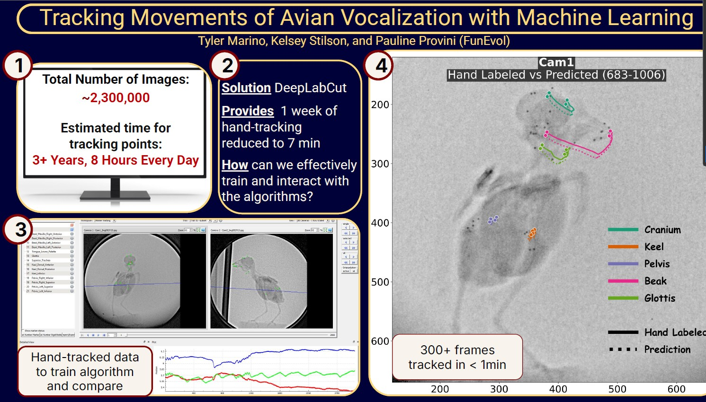
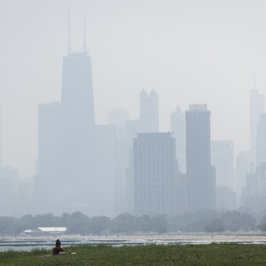
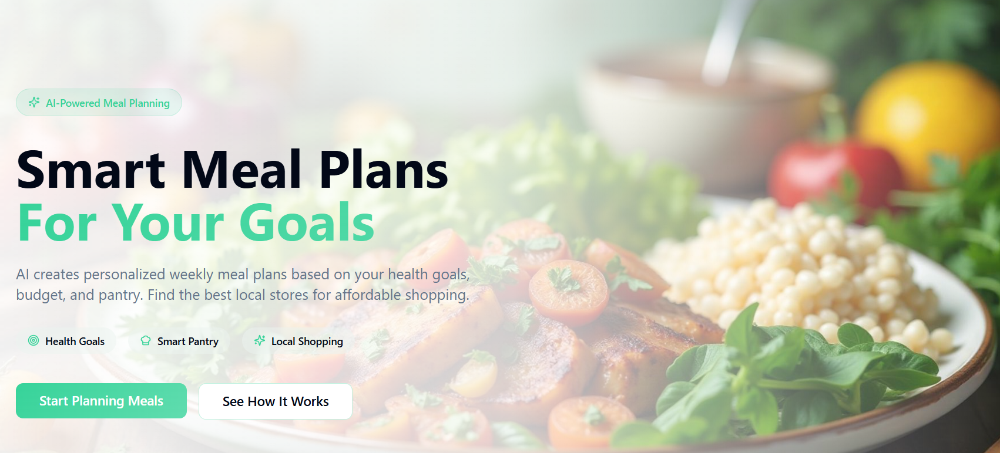
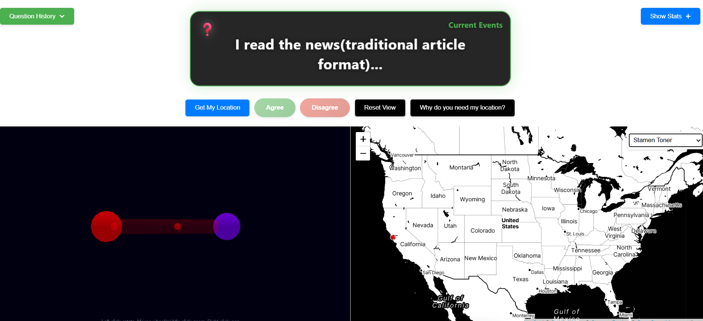
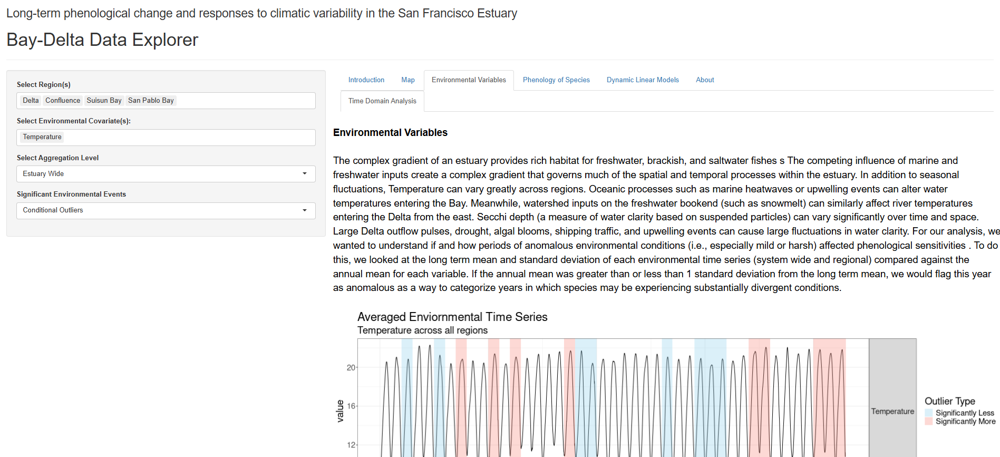
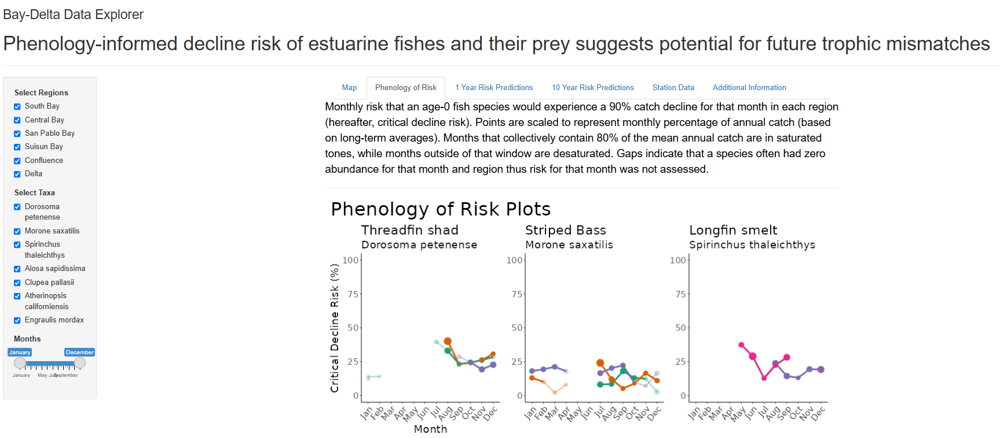
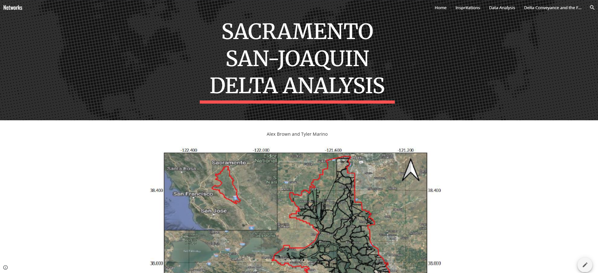
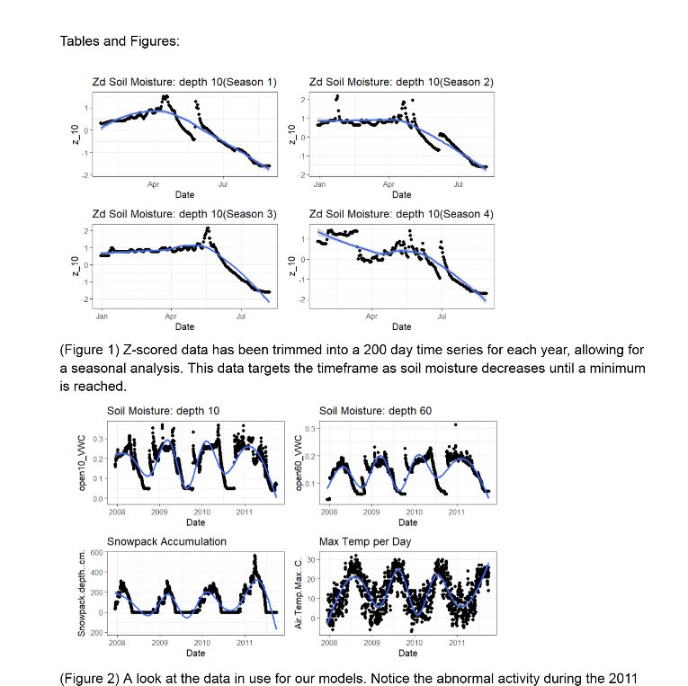

Technical Works
In my years in University and before, I have explored the worlds designed by engineers and computer wizards. I enjoyed the mathematical applications in the scientific and real world modeling realms as well as more interpersonal applications. I have gravitated to real world problems and utilizing my intuition with data to model and understand processes that elevate our world to one which we intermingle harmoniously with each other and the planet. A challenging problem to shift mindsets, but through my developments in consulting and research I have grown comfortable with looking at interpersonal and envirnmental system data. I hope to find a realm of industry and research where I can further these passions of mine and help spread the word motivating a better future.
Discussion around OECD's AI for Smart Cities
I am super intersted in the development of Smart Cities, ranging from infrastructure, transportation, public health and community. I wanted to discuss these things with others! This is inspired by OECD's 2024 paper on AI for smart cities.

Machine Learning and Marker Tracking
I have been working at the natural history museum in Paris where I have been testing machine learning models to track markers in xray videos! I got to present my project ideas at our Young Researchers Symposium.

Chicago AQI Analysis
Recently, Chicago made public their collection of air quality data in partnership with Clarity. I am very fond of this data from an spatial temporal perspective, especially when relating it to social, environmental and economic dynamics in and around urban form. I will be developing a series of studies to understand and model Chicago from my data forward perspective.

Recipes De Remi
I have been working on a project with Madi in an attempt to get people to eat more whole ingredients and reduce food waste. The idea is to incorporate tracking of food, where to source ingredients and sharing of recipes!

Relevance
I have been working on a project that is aimed at asking questions regarding current events and display answers to those who participate. There will be synthesis work of the historical responses. This is a component of a larger project called Laigthe. I work with Patrick Skaf on this. We started collaborating in the Fall of 2024

Long-term phenological change and responses to climatic variability in the San Francisco Estuary
Shortly after graduation, I officially joined with the UC Berekely Freshwater Lab as a Staff Research Associate in Data Science. I was tasked with carrying out a research project in conjunction with the project formerly stated. As I had the math and data experience necessary, my skills were used to take the ecological vision of 2 professors(Albert Ruhi and Stephanie Carlson) and a postdoc (Robert Fournier) and conduct mathematical analysis to understand long term trends in species populations and the relationships theses trends hold with environmental conditions.

Phenology-informed decline risk of estuarine fishes and their prey suggests
potential for future trophic mismatches
As a 4th Year undergraduate, I joined with the UC Berekely Freshwater Lab to design a interactive Data visualization app using Rshiny. This was associated with the paper with the same name as the project titled here. Please play around with the website and enjoy learning about SF Bay Ecosystem!

Bay Delta Network Anlysis
In this project, Alex Brown and I were inspired to research and develop for our class "Data Science for Urban Systems" taught by Dr. Marta Gonzalez throught the UC Berkeley department of Civil Engineering and City Planning. Throughout the course were were exposed to network analysis using python tools such as NetworkX and OSMNX as well as conduct geospatial analysis with census tracks in the United States. This project, linked below was inspired by the current and prospective funding from a California grant to the University of California to research the Bay Delta water system which is a network of levees, rivers, and other waterways which guide water from the Sierra Nevada Mountain range to California farmland and other destinations for fresh water. The current system is extremely stressed due to its overdue reformation and redevelopment needs. Current efforts are being ideaiated within the current government, but major changes need to take place in order to reduce the levee failures that lead to fresh water sources bleeding into the salty estuaries of the San Pablo and Suisun Bay.
We first mapped each body of water as a node with geographic data, type of waterway and region within the delta system and used those that it runs into as their links. Then we conducted network anlysis populating a datatable with network statistics such as degree connectivity, degree centrality, and other NetworkX statistical properties one can pull. The relationships between geography and connectivity were interesting to me, so often analysis was conducted in the domain of geography. We futher did clustering analysis over multiple factor combinations from the statistics and other given information.
A main goal is to identify ensemble levee failures given there is a large water event such as heavy rain storms or large spring melts from a deep snowpack. You will find the website below which has more information as well as the link to my github folder for this project.
Github for Delta Network Analysis

Soil Moisture Analysis in the Sierra Nevadas
Being that I am an avid skiier and very conscious about the affects of climate change on our mountain regions with respect to snow fall, rain on snow events, and other factors that may lead to detrimental events for our natural landscape, during the course: Time Series Analysis for Ecological and Environmental data I conducted the following research.
I located and wrangled relational data sets I found that yielded information on weather patterns and snow depth at several locations in the Sierra Nevada mountain range. Using various analysis methods, AB testing, descriptive statistic analysis, etc. I was able to refine my data to input it into a Mutlivariate Autoregressive Model using the R MARSS package. I had a timeframe of about 10 years including two El Nino years. El Nino is important to note as typically it is accompanied by warmer weather and more rain events. I thought that this was valuable to study as with the climate evolution, we are trending towards warmer weather which leads to less snow and more rain when we do have storms in the sierras. I was looking to analyze the covariate effects of snow pack, temperature and rainfall on soil moisture at several depths at a fixed location in the sierras. It was important to note that the data for soil moisture and snow, temperature and rain were collected at different locations, so a function would need to be applied to transform the data to the "same" domain. Below you will see a link to the presentation I gave, the journal entry I wrote as well as the github containing all my code and other important information and data.
Presentation from Research

Github(see zip folder for data and all other information)
------
Which of our open ML Research Engineer roles are you interested in, in order?
Applied Research > General
------
Describe an ML idea you were initially excited about but later decided was wrong or unimportant. What changed your mind?
I was motivated to build a spatial-temporal (ST) interpolation model for my research in a freshwater ecology lab.
I read down the modern machine learning model pipeline from RNNs to Transformers, believing ST-GraphNeuralNets were the key.
Under the pressure of scientific needs and my limited deep learning and model tuning/training experience,
I found that standard spline and localized linear regression models (with domain specific accuracy metrics) met the needs of my lab. I am left unsatisfied and want to wrangle these models in the future.
------
Describe a time when you embarked on a sidequest / took initiative outside your core job responsibilities. What value did you add to your organization? What drove you to action?
I participated throughout the year in the Data Science for the Environment (EchoTech Connect series) while I was working as a staff researhc associate on the project mentioned in the question before.
I was exposed to information about data visualization apps, the power of user agency and interaction with the reearch we were conducting. It helped me build a visualization app that serves alongside my first research paper,
and a second that will serve alongside another research paper in prep. Now in my current job I am using these same skills to make machine learning more accessible for researchers in my domain.
------
How could better accuracy fail to translate into more useful forecasts for a weather model?
Oftentimes better accuracy results in a tradeoff, and suppose that tradeoff is time.
Your model was 4 hours dalayed in its prediction of the landfall of the typhoon and now there are people remaining in a village where the only road out is
1 lane and in the direction of the incoming typhoon so only a fraction of people will make it away while the rest are left to withstand the storm.
I am sure they are glad you got the windspeed down to the nearest km/h at 201 km/h. Luckily in this case they all had good storm infrastructure and were safe.
------
Describe a time you changed how you use LLMs in your work — switching models, tools, or workflows. What did you observe that prompted the change?
As a student who wants to try many differnet tools related to my studies,
I have gotten familiar using various tools, at first chat-gpt for discussions, then lovable for displaying what is possible,
switching over to github copilot where I can use a suite of models both coding tools and generalist language models for specific tuning and detailed improvements and control.
I have learned the importance of control when using AI. The building power is monumental, but the output falls on you. If you cannot take ownership when it fails and fix it fast, it's your fault, not the AI.